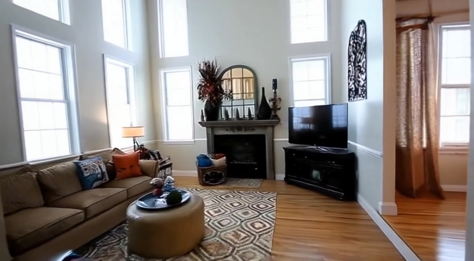

Loading memory…

Selected examples · RealEstate10K
A closer look at the return.
The same scene, explored and revisited.
Explore
Selected closed-loop example · 153 frames
Method & quantitative results
Anchor-protected memory
Keep observed anchors. Read two depth-ranked candidates per target cell, reserving a real candidate when available. Guard generated writes against the observed surface.

RealEstate10K
Common-five scores use the original fixed sample, not the curated showcase. NVS: frames 1–80 against the held-out view. Closed loop: frame 152 against the input. The common-five runs are diagnostic; test-100 is a separate split. Shared scene IDs do not imply identical internal camera handling.
WorldScore
Different evaluation sets: Engram uses 80 static + 20 dynamic cases; Spatia uses 100 + 100. These reported scores are not a paired comparison.